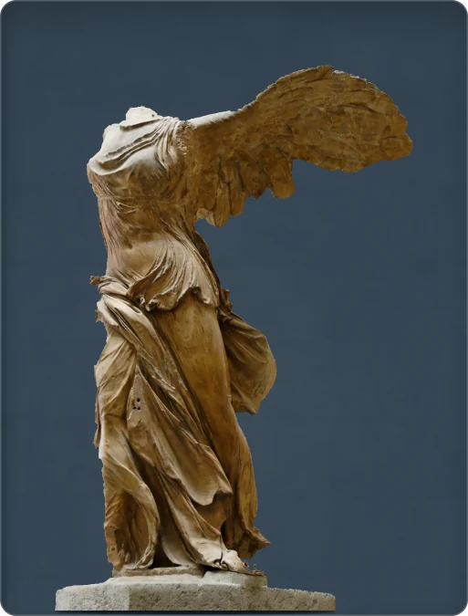

← Retour à la collection
Victoire de Samothrace

Les plis du marbre dessinent le vent
Niké, déesse de la Victoire, se pose sur la proue d’un navire. Le vêtement plaqué contre son corps et les plis soulevés donnent l’impression du vent. Découverte à Samothrace en 1863, cette sculpture grecque date de 200–175 av. J.-C. La figure est en marbre de Paros, le navire en marbre de Lartos. L’aile droite a été reconstituée en plâtre.
Grèce, époque hellénistique · 200–175 av. J.-C. · marbre de Paros · Musée du Louvre, Paris · inv. Ma 2369
Crédit photographique
Photo : Marie-Lan Nguyen / Wikimedia Commons · domaine public · fond modifié